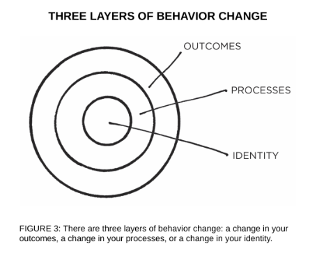
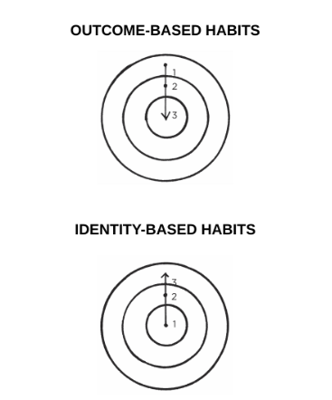

WHY IS IT so easy to repeat bad habits and so hard to form good ones?Few things can have a more
powerful impact on your life than
improving your daily habits. And yet it is likely that this time next year
you’ll be doing the same thing rather than something better.
It often feels difficult to keep good habits going for more than a few
days, even with sincere effort and the occasional burst of motivation. Habits
like exercise, meditation, journaling, and cooking are reasonable for a day
or two and then become a hassle.
However, once your habits are established, they seem to stick around
forever—especially the unwanted ones. Despite our best intentions,
unhealthy habits like eating junk food, watching too much television,
procrastinating, and smoking can feel impossible to break.
Changing our habits is challenging for two reasons: (1) we try to change
the wrong thing and (2) we try to change our habits in the wrong way. In
this chapter, I’ll address the first point. In the chapters that follow, I’ll
answer the second.
Our first mistake is that we try to change the wrong thing. To understand
what I mean, consider that there are three levels at which change can occur.
You can imagine them like the layers of an onion.

The first layer is changing your outcomes. This level is concerned
with changing your results: losing weight, publishing a book, winning a
championship. Most of the goals you set are associated with this level of
change.
The second layer is changing your process. This level is concerned
with changing your habits and systems: implementing a new routine at the
gym, decluttering your desk for better workflow, developing a meditation
practice. Most of the habits you build are associated with this level.
The third and deepest layer is changing your identity. This level is
concerned with changing your beliefs: your worldview, your self-image,
your judgments about yourself and others. Most of the beliefs, assumptions,
and biases you hold are associated with this level.
Outcomes are about what you get. Processes are about what you do.
Identity is about what you believe. When it comes to building habits that
last—when it comes to building a system of 1 percent improvements—the
problem is not that one level is “better” or “worse” than another. All levels
of change are useful in their own way. The problem is the direction of
change.
Many people begin the process of changing their habits by focusing on
what they want to achieve. This leads us to outcome-based habits. The
alternative is to build identity-based habits. With this approach, we start by
focusing on who we wish to become.

Imagine two people resisting a cigarette. When offered a smoke, the first
person says, “No thanks. I’m trying to quit.” It sounds like a reasonableresponse, but this person still believes they are a smoker who is trying to be
something else. They are hoping their behavior will change while carrying
around the same beliefs.
The second person declines by saying, “No thanks. I’m not a smoker.”
It’s a small difference, but this statement signals a shift in identity. Smoking
was part of their former life, not their current one. They no longer identify
as someone who smokes.
Most people don’t even consider identity change when they set out to
improve. They just think, “I want to be skinny (outcome) and if I stick to
this diet, then I’ll be skinny (process).” They set goals and determine the
actions they should take to achieve those goals without considering the
beliefs that drive their actions. They never shift the way they look at
themselves, and they don’t realize that their old identity can sabotage their
new plans for change.
Behind every system of actions are a system of beliefs. The system of a
democracy is founded on beliefs like freedom, majority rule, and social
equality. The system of a dictatorship has a very different set of beliefs like
absolute authority and strict obedience. You can imagine many ways to try
to get more people to vote in a democracy, but such behavior change would
never get off the ground in a dictatorship. That’s not the identity of the
system. Voting is a behavior that is impossible under a certain set of beliefs.
A similar pattern exists whether we are discussing individuals,
organizations, or societies. There are a set of beliefs and assumptions that
shape the system, an identity behind the habits.
Behavior that is incongruent with the self will not last. You may want
more money, but if your identity is someone who consumes rather than
creates, then you’ll continue to be pulled toward spending rather than
earning. You may want better health, but if you continue to prioritize
comfort over accomplishment, you’ll be drawn to relaxing rather than
training. It’s hard to change your habits if you never change the underlying
beliefs that led to your past behavior. You have a new goal and a new plan,
but you haven’t changed who you are.
The story of Brian Clark, an entrepreneur from Boulder, Colorado,
provides a good example. “For as long as I can remember, I’ve chewed my
fingernails,” Clark told me. “It started as a nervous habit when I was young,
and then morphed into an undesirable grooming ritual. One day, I resolvedto stop chewing my nails until they grew out a bit. Through mindful
willpower alone, I managed to do it.”
Then, Clark did something surprising.
“I asked my wife to schedule my first-ever manicure,” he said. “My
thought was that if I started paying to maintain my nails, I wouldn’t chew
them. And it worked, but not for the monetary reason. What happened was
the manicure made my fingers look really nice for the first time. The
manicurist even said that—other than the chewing—I had really healthy,
attractive nails. Suddenly, I was proud of my fingernails. And even though
that’s something I had never aspired to, it made all the difference. I’ve
never chewed my nails since; not even a single close call. And it’s because I
now take pride in properly caring for them.”
The ultimate form of intrinsic motivation is when a habit becomes part
of your identity. It’s one thing to say I’m the type of person who wants this.
It’s something very different to say I’m the type of person who is this.
The more pride you have in a particular aspect of your identity, the more
motivated you will be to maintain the habits associated with it. If you’re
proud of how your hair looks, you’ll develop all sorts of habits to care for
and maintain it. If you’re proud of the size of your biceps, you’ll make sure
you never skip an upper-body workout. If you’re proud of the scarves you
knit, you’ll be more likely to spend hours knitting each week. Once your
pride gets involved, you’ll fight tooth and nail to maintain your habits.
true behavior change is identity change. You might start a habit because
of motivation, but the only reason you’ll stick with one is that it becomes
part of your identity. Anyone can convince themselves to visit the gym or
eat healthy once or twice, but if you don’t shift the belief behind the
behavior, then it is hard to stick with long-term changes. Improvements are
only temporary until they become part of who you are.
The goal is not to read a book, the goal is to become a reader.
The goal is not to run a marathon, the goal is to become a runner.
The goal is not to learn an instrument, the goal is to become a
musician.Your behaviors are usually a reflection of your identity. What you do is
an indication of the type of person you believe that you are—either
consciously or nonconsciously.* Research has shown that once a person
believes in a particular aspect of their identity, they are more likely to act in
alignment with that belief. For example, people who identified as “being a
voter” were more likely to vote than those who simply claimed “voting”
was an action they wanted to perform. Similarly, the person who
incorporates exercise into their identity doesn’t have to convince
themselves to train. Doing the right thing is easy. After all, when your
behavior and your identity are fully aligned, you are no longer pursuing
behavior change. You are simply acting like the type of person you already
believe yourself to be.
Like all aspects of habit formation, this, too, is a double-edged sword.
When working for you, identity change can be a powerful force for self-
improvement. When working against you, though, identity change can be a
curse. Once you have adopted an identity, it can be easy to let your
allegiance to it impact your ability to change. Many people walk through
life in a cognitive slumber, blindly following the norms attached to their
identity.
“I’m terrible with directions.”
“I’m not a morning person.”
“I’m bad at remembering people’s names.”
“I’m always late.”
“I’m not good with technology.”
“I’m horrible at math.”
. . . and a thousand other variations.
When you have repeated a story to yourself for years, it is easy to slide
into these mental grooves and accept them as a fact. In time, you begin to
resist certain actions because “that’s not who I am.” There is internal
pressure to maintain your self-image and behave in a way that is consistent
with your beliefs. You find whatever way you can to avoid contradicting
yourself.The more deeply a thought or action is tied to your identity, the more
difficult it is to change it. It can feel comfortable to believe what your
culture believes (group identity) or to do what upholds your self-image
(personal identity), even if it’s wrong. The biggest barrier to positive change
at any level—individual, team, society—is identity conflict. Good habits
can make rational sense, but if they conflict with your identity, you will fail
to put them into action.
On any given day, you may struggle with your habits because you’re too
busy or too tired or too overwhelmed or hundreds of other reasons. Over the
long run, however, the real reason you fail to stick with habits is that your
self-image gets in the way. This is why you can’t get too attached to one
version of your identity. Progress requires unlearning. Becoming the best
version of yourself requires you to continuously edit your beliefs, and to
upgrade and expand your identity.
This brings us to an important question: If your beliefs and worldview
play such an important role in your behavior, where do they come from in
the first place? How, exactly, is your identity formed? And how can you
emphasize new aspects of your identity that serve you and gradually erase
the pieces that hinder you?